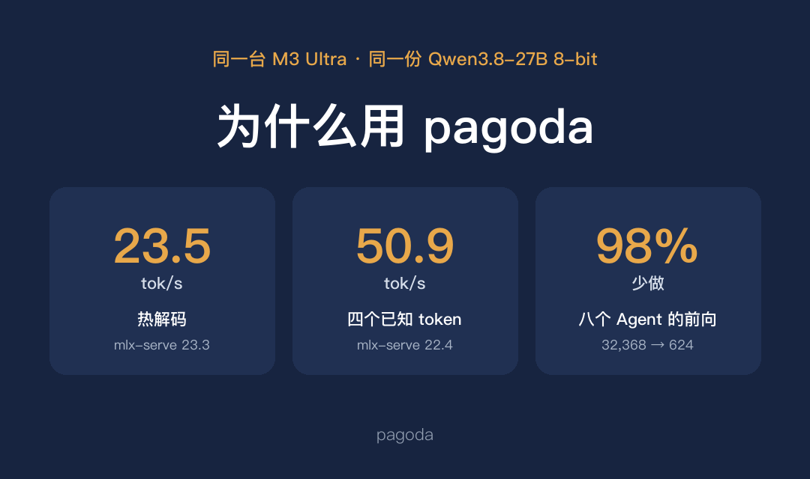
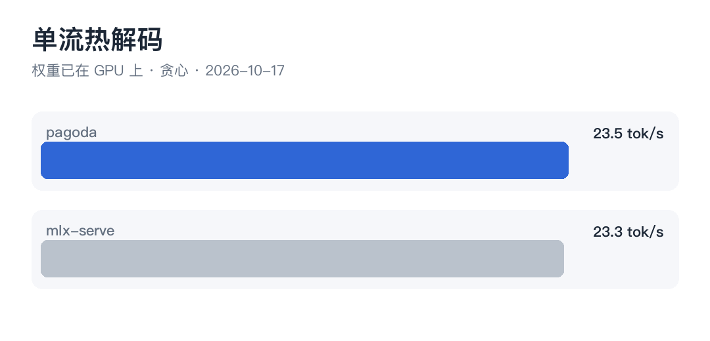
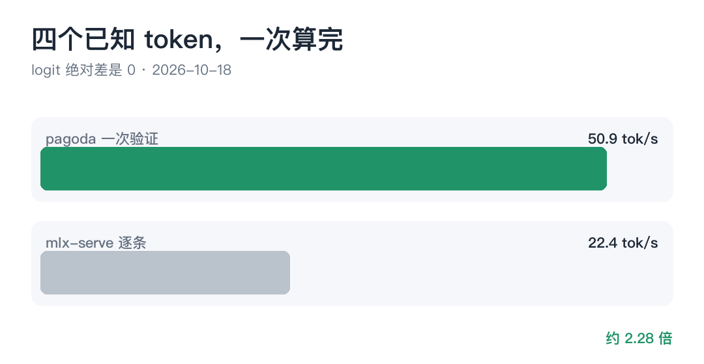
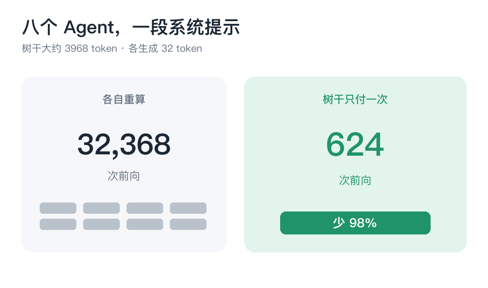
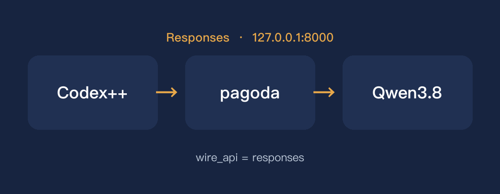

同一份 Qwen3.8 上，pagoda 单流热解码 23.5 tok/s，mlx-serve 是 23.3。四个已知 token 一次验证 50.9 tok/s。八个 Agent 共用长提示，前向少 98%。


单流热解码

四个已知 token

八个 Agent
Codex++ 走 Responses，接到本机 8000。数字和接法在 GitHub README。

接到 Codex++